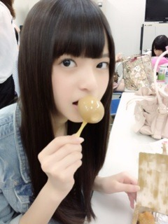
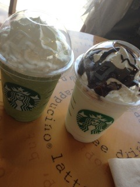
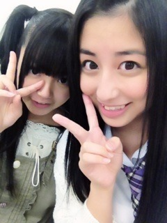

| 2012/06 04 Mon | 昨日もねー、やっぱり楽しかった♪♪(o・ω・)ノ)) |
うー！
おはよー！
昨日はお仕事だったよ(^^)/♡
久しぶりにメンバーみんなに会えて嬉しかった

なんてゆーか、すっごいわきゃわきゃしてた印象だなあ
たまたまあしゅと控え室の席となり座ってたら
まりかに
なんで２人隣座っちゃったのー(´･_･`)
うるさくなるやん←
ってゆわれたのは秘密ねー。
いや、そこまでうるさくなかったよ？
いや、うるさかったのかあれは？
......
わかんなーい┐('～`;)┌
あしゅになめんなまぢー
ってゆったら今回は真似してきた！
なめんなまぢなめんなまぢなめんなまぢなめんなまぢーーー
ってえんどれすー。
┐('～`;)┌
やれやれー
まだまだだなあしゅか。
┐('～`;)┌

ダチョウの卵食べてるなんて、
まだまだだな┐('～`;)┌
人にとってのゆで卵＝あしゅかのダチョウの卵
の大きさだかんねー
激写してみた！←
あとはねー、
昨日ちょっと待ち時間あったから
ひめたんと2人でスタバDateしちゃった\(//∇//)\

おいしかったねー♡
生クリーム多めで、って言ってたのは
ひめたんもよねー？(´･ω･`)
あれ、ちゃう？

そーよね(´･ω･`)？
ひめたんとねー、久しぶりに
めっちゃ語った(>ω<)
語ったっていうよりもちはるは聞いてたほうが多いかもー
聞くほうが好きなの

ひめたんがずっとしゃべってくれるから
ちょうどいーのよねー(o^^o)
ないすこんびっ！

今日は乃木メンの話いっぱいした♡
でもちょっとテスト返ってきたから
その話もしよーかな←
物理と数Ⅰも返ってきたあー！！
物理赤点だと思ってたら結構うえのほういけたから
満足なうーー♡
へへ
今日も返ってくるなー絶対ー(´･ω･`)
あーでも
逃げられないー
どぉするぅ？
どぉするぅ？
だから逃げないー＼(^^)／笑
大人になったなあ
どやっ！
とゆーことで去ります←
学校着くー

今日も１日がんばるぞっ
ばいるんっ
るんるんっ
ちはるんっ
♪♪(o・ω・)ノ))
コメント(63)
2012/06/04 07:42